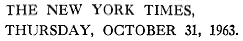
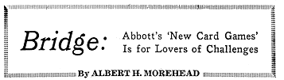

|
In December, 2001, my card game Eleusis appeared in the latest edition of Hoyle’s Rules of Games, the most popular of the reference books on games. Since Eleusis was already in most of the other game collections, it could now be considered to be an established, standard card game. And not only that—Hoyle’s Rules of Games also includes Variety, another of my old games. I’m pretty excited about all this, so you’ll have to excuse me if I do a lot of crowing here. Hoyle’s Rules is now edited by Philip Morehead. Previously it was edited by Philip’s father, Albert Morehead, and by Geoffrey Mott-Smith. On October 31, 1963, Albert Morehead gave my book Abbott’s New Card Games a nice review in his New York Times bridge column. The review concluded with this paragraph: “Robert Abbott’s book is for lovers of the unfamiliar challenge, and historical precedent warns that Mr. Abbott may have to wait a few hundred years before his games yield glory to his memory.” Well, he was wrong. It only took about forty years! Here is Morehead’s complete review: |
|
  At long last, Robert Abbott’s new card games will be available in a book that can be bought in book stores: A book titled “Abbott’s New Card Games” has just been published by Stein and Day (New York; $3.95), the concern that only last week was announced as the official publisher for plays to be produced at Lincoln Center. Excepting a few hundred solitaires born in the 19th century, every card game popular today can trace its ancestry back at least 400 years, and usually much more. The family of card games to which bridge belongs was not mentioned in English literature until 1529, but the reference makes it clear that it was not a new game then. Sir John Suckling may have invented cribbage about 1640, but his game was a development of one already ancient. Pinochle, an American game, is a direct descendant of the oldest of all European card games, tarok, which dates back to the 13th century. Poker and rummy are of Oriental origin, more than 700 years old, and rummy is almost identical with the Chinese mah-jongg, a “tile” game that can be traced back beyond the invention of printing, paper money and playing cards 1,100 years ago. The Abbott games relate the pack of playing cards to more modem concepts. The nomenclature is carefully contrived. The game Babel simulates stockbrokers’ tactics on the Exchange. Auction is just what it sounds like and so is Construction. Eleusis is as refreshingly original as Austin Dobson’s dear little Molly Trefusis. In all there are nine new games, one of which (Ultima) is not a card game but an essay at making chess more complex than it already is. Robert Abbott’s book is for lovers of the unfamiliar challenge, and historical precedent warns that Mr. Abbott may have to wait a few hundred years before his games yield glory to his memory. |